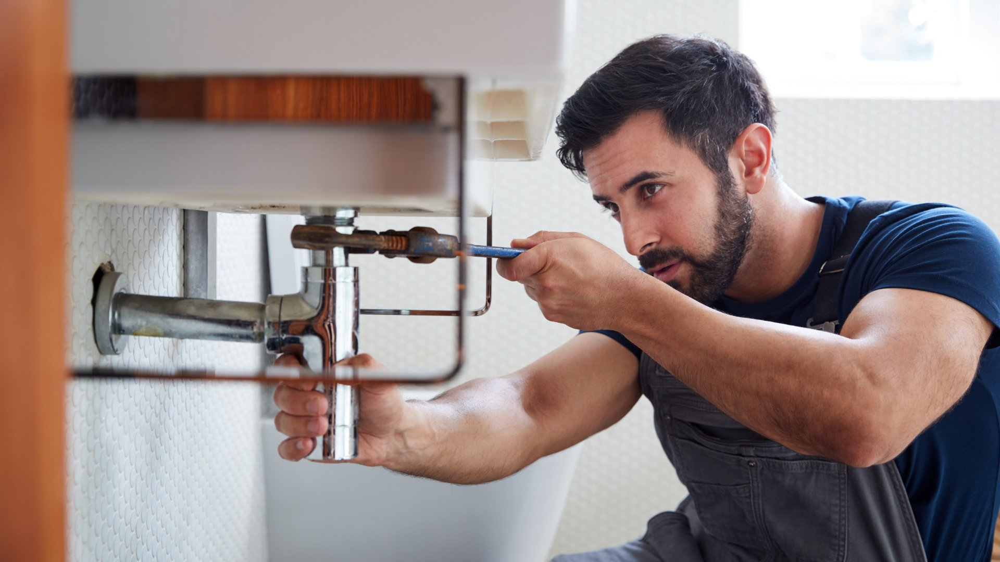

City Plumbing Services covers all of Bolton — from the older mill-town terraces of Great Lever and Halliwell to the newer housing estates of Harwood and Breightmet. Gas Safe registered engineers covering BL1, BL2, BL3 and surrounding postcodes.
Bolton has one of the most distinctive housing profiles in Greater Manchester — a legacy of its industrial past. The mill-town terraces that fill Great Lever, Halliwell, and Deane date from the Victorian era and have plumbing systems that have been improvised over more than a century. Back boilers, original lead supply pipes, and gravity-fed systems with copper cylinders are common in these properties. Working on them properly requires experience and patience — and that's what we bring.
Bolton also has a significant number of rental properties, particularly in the BL1 and BL3 postcodes. Landlords with properties in these areas often face decisions about older heating systems — whether to repair, upgrade, or replace. We give honest advice and a fair price, and we understand that landlords are making business decisions as well as property ones. If a repair makes more sense than a replacement, we'll say so.

All our services are available to Bolton residents, landlords, and property managers across BL1, BL2 and BL3.
Burst pipes, major leaks, no hot water or heating — available 24/7 across Bolton. Older terraced properties in Great Lever and Halliwell are particularly prone to emergency failures — we respond fast and know these buildings.
Annual services, breakdown repairs, and full boiler replacements. We work regularly with older back boilers and floor-standing units in Bolton's terraced housing — advising honestly on whether repair or replacement is the right call.
Full bathroom renovations across Bolton, from smaller terrace bathrooms in Great Lever to larger family bathrooms in Harwood semis. We manage the whole project and deal with whatever pipework challenges the property presents.
New central heating installations, radiator upgrades, and power flushing. In Bolton's older housing we often carry out full system conversions — removing old back boilers and gravity systems and installing modern sealed combi setups.
Leaking pipes, dripping taps, running toilets, low water pressure — no job too small across Bolton. Same-day availability on most general repairs throughout BL1, BL2, and BL3.
Bolton has a large number of rental properties in the BL1 and BL3 postcodes. We carry out gas safety inspections and issue CP12 certificates the same day, working with individual landlords and managing agents across the borough.
Bolton's industrial heritage left the town with a distinctive pattern of housing — dense terraced streets built for mill workers in the Victorian and Edwardian eras, filling neighbourhoods like Great Lever, Halliwell, Astley Bridge, and Tonge. These properties were built quickly and cheaply, with basic plumbing that has evolved over a century of piecemeal updates. The result is often complex: original lead supply pipes, iron drain stacks, and heating systems that have been added to at various points without always following a coherent plan.
Back boilers were installed in many Bolton terraces from the 1960s through to the 1980s. These units — which sit behind a decorative fire surround in the living room — are now past the end of their designed life in most cases, though some are still running. When a back boiler fails in Bolton, the question is usually whether to replace like-for-like (increasingly difficult as parts become scarce) or convert to a modern combi boiler installation. We advise honestly on both options and carry out conversions regularly across BL1, BL2, and BL3.
Harwood, Bromley Cross, and Lostock — in the BL2 postcode — are a different story. These are largely post-war and late-twentieth-century developments with semi-detached and detached family homes that have more standard heating and plumbing setups. The issues here tend to be around system age and efficiency rather than unusual configurations — we still carry out a proper assessment before recommending anything, but the range of possible problems is narrower.
For landlords in Bolton, keeping on top of gas safety compliance is essential. The high density of rental properties in the BL3 area — around Deane and Daubhill — means we carry out a significant number of CP12 inspections in this part of Bolton. We can schedule inspections across multiple properties in a single day and issue certificates digitally, making the compliance process as straightforward as possible.
City Plumbing Services is Gas Safe registered (reg: 000000), carries £5 million public liability insurance, and has been working across Bolton and Greater Manchester since 2009. Call us on 0161 000 0000 for a free quote or to book an engineer.
"Old back boiler finally gave up the ghost after years of trouble. City Plumbing came out, assessed what we had, and recommended a combi replacement. The installation was done in a single day — they even tidied behind where the old fire surround had been. Heating and hot water are both transformed. Really pleased."
Pete S. — Halliwell Road, Bolton, BL1
"Emergency call — pipe burst in the kitchen ceiling on a Sunday night. City Plumbing answered straight away, engineer arrived within the hour, damage contained quickly. Really calm and professional under pressure, explained everything clearly and sorted the problem properly. First class emergency service."
Diane F. — Great Lever, Bolton, BL3
"City Plumbing handle all my gas safety certificates across three rental properties in Deane. Booking is easy, they always turn up on time, the certificates are issued the same day, and if they spot anything that needs attention they flag it clearly with a quote. Excellent service for landlords."
Iqbal R. — Landlord, Deane, BL3